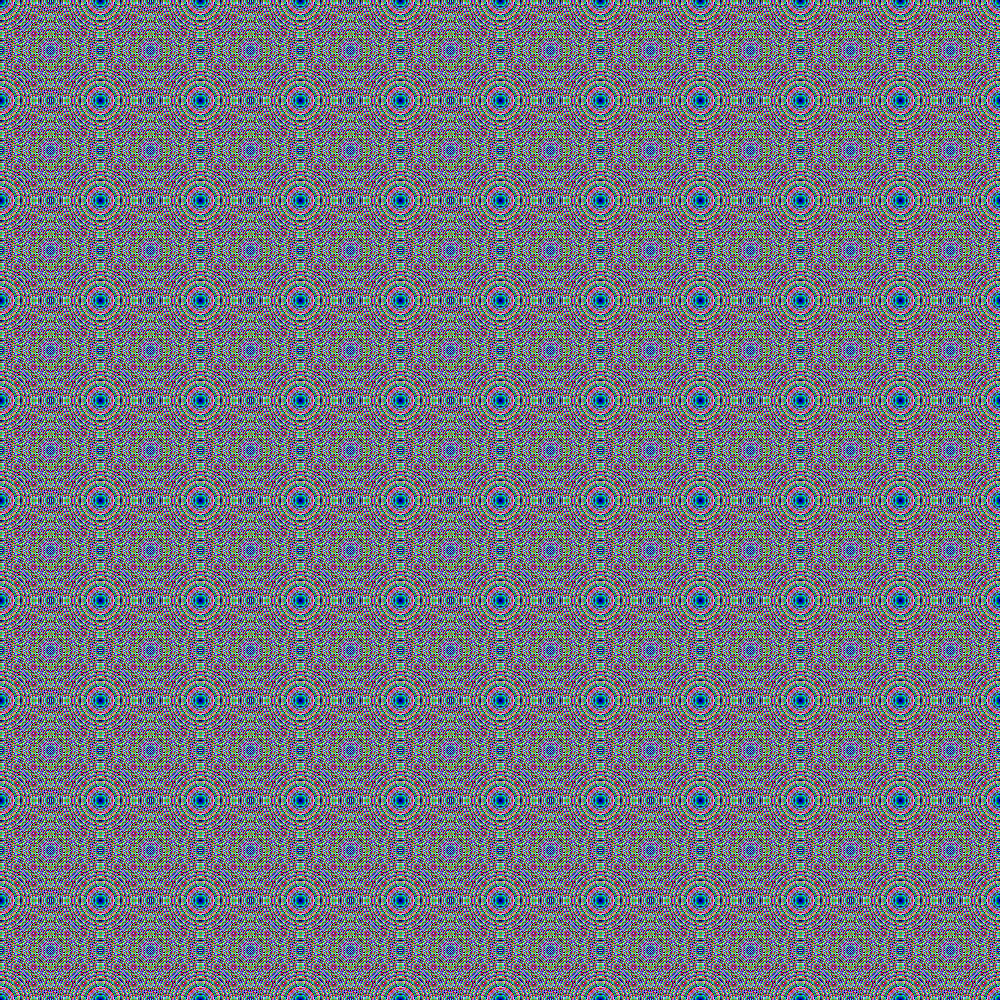

Refatoração do repositório genart
Gerando imagens legais, ou arte generativa com uma fórmula simples em Go (Golang) - a refatoração

Imagem gerada pelo genart, com os parâmetros fórmula:xcyc, size:1000, constant:2, colors:200
Historinha
Recentemente, para aprender um pouco mais de Go, e fazer algo divertido, criei um novo repositório com um projeto para desenhar imagens baseadas em fórmulas (anteriormente tinha usado racket:
https://github.com/paulohrpinheiro/genart/
Mas da forma como estava, era muito difícil alterar de forma simples, para incluir novas fórmulas. E o código estava bem zoado em sua organização. Agora, depois de refatorar, está apenas zoado :)
Explorando o resultado final
Depois de muito bater a cabeça, cheguei à versão v0.0.1. A primeira versão está com a tag v0.0.0.
Aqui, todas as alterações feitas:
https://github.com/paulohrpinheiro/genart/compare/v0.0.0...v0.0.1
Os arquivos ccxy/ccxy.go e types/types.go foram apagados. A pasta formula/ agora contém o pacote de mesmo nome, em que o arquivo formula/formula.go contém as funções principais e os novos formula/ccxy.go e formula/xcyc.go, que comparados à estrutura anterior, agora contém apenas as funções de aplicação das fórmulas específicas para geração das imagens.
A estrutura de arquivos e diretórios ficou dessa forma:
$ tree
.
├── cmd
│ ├── api
│ │ └── main.go
│ └── cli
│ └── main.go
├── formula
│ ├── ccxy.go
│ ├── formula.go
│ └── xcyc.go
├── go.mod
├── images
│ ├── ccxy_size:1000_constant:10_colors:100.png
│ ├── ccxy_size:1000_constant:20_colors:200.png
│ ├── ccxy_size:1000_constant:2_colors:70.png
│ └── xcyc_size:1000_constant:2_colors:70.png
├── LICENSE
├── Makefile
└── README.md
Uma primeira alteração, foi atualizar o release cadidate da versão 1.22 para o rc2:
$ git diff go.mod
diff --git a/go.mod b/go.mod
index 73586c8..4e887c3 100644
--- a/go.mod
+++ b/go.mod
@@ -1,3 +1,3 @@
module genart
-go 1.22rc1
+go 1.22rc2
Já no uso, uma primeira alteração foi realizada no cli:
diff --git a/cmd/cli/main.go b/cmd/cli/main.go
index 5866133..40d7dfd 100644
--- a/cmd/cli/main.go
+++ b/cmd/cli/main.go
@@ -6,7 +6,7 @@ import (
"image/color/palette"
"os"
- "genart/ccxy"
+ "genart/formula"
)
const (
@@ -19,6 +19,7 @@ const (
func main() {
colors := palette.WebSafe
+ formulaName := flag.String("formula", "ccxy", "formula to use")
fileName := flag.String("filename", defaultFileName, "filename to save image (.png)")
imageSize := flag.Int("size", defaultImageSize, "size of image")
constant := flag.Int("constant", defaultConstant, "constant for formula (c): c-c*x*y")
@@ -26,8 +27,9 @@ func main() {
flag.Parse()
- newImage := ccxy.CcxyStruct{}
- newImage.Init(*imageSize, *constant, *maxColors, colors)
+ newImage := formula.New()
+
+ newImage.Init(*formulaName, *imageSize, *constant, *maxColors, colors)
newImage.Draw()
f, err := os.Create(*fileName)
Como se pode ler, os imports foram adaptados, acrescentou-se um novo parâmetro (o nome da fórmula ser usada), e adaptou-se o uso do package formula, que ao invés de chamar diretamente a fórmula, passa seu nome como parâmetro na inicialização, que determina a função a ser utilizada.
Outra alteração importante, foi refatorar o server para a nova estrutura:
$ git --no-pager diff cmd/api/main.go
diff --git a/cmd/api/main.go b/cmd/api/main.go
index 8c466ac..e89e4b4 100644
--- a/cmd/api/main.go
+++ b/cmd/api/main.go
@@ -1,6 +1,7 @@
package main
import (
+ "fmt"
"image/png"
"image/color/palette"
"log"
@@ -8,7 +9,7 @@ import (
"os"
"strconv"
- "genart/ccxy"
+ "genart/formula"
)
func sendError(w http.ResponseWriter, msg string) {
@@ -17,7 +18,8 @@ func sendError(w http.ResponseWriter, msg string) {
return
}
-func ccxyHandler(w http.ResponseWriter, r *http.Request) {
+func formulaHandler(w http.ResponseWriter, r *http.Request) {
+ formulaName := r.PathValue("formulaName")
size, err := strconv.Atoi(r.PathValue("size"))
if err != nil {
sendError(w, "Invalid size value")
@@ -32,12 +34,12 @@ func ccxyHandler(w http.ResponseWriter, r *http.Request) {
colors, err := strconv.Atoi(r.PathValue("colors"))
if err != nil {
- sendError(w, "Invalid colors value")
+ sendError(w, "Invalid colors value")
return
}
- newImage := ccxy.CcxyStruct{}
- newImage.Init(size, constant, colors, palette.WebSafe)
+ newImage := formula.New()
+ newImage.Init(formulaName, size, constant, colors, palette.WebSafe)
newImage.Draw()
w.Header().Set("Content-Type", "image/png")
@@ -52,8 +54,8 @@ func main() {
mux := http.NewServeMux()
mux.HandleFunc(
- "GET /ccxy/size/{size}/constant/{constant}/colors/{colors}/",
- ccxyHandler,
+ "GET /{formulaName}/size/{size}/constant/{constant}/colors/{colors}/",
+ formulaHandler,
)
fmt.Printf("Listening on %s\n", listenStr)
No server, basicamente foram as mesmas alterações do cli.
O package formula
Cada fórmula deve estar contida em um arquivo, com sua própria função de desenho, por exemplo formula/ccxy.go:
package formula
import (
"image"
)
func CcxyDraw(fs *FormulaStruct) {
rect := image.Rect(0, 0, fs.ImageSize, fs.ImageSize)
img := image.NewPaletted(rect, fs.Palette)
for x := range fs.ImageSize {
for y := range fs.ImageSize {
value := (fs.Constant - fs.Constant*x*y)
color := uint8(value % fs.MaxColors)
img.SetColorIndex(x, y, color)
}
}
fs.Image = img
}
A função recebe a estrutura que contém os dados, para acessar os parâmetros necessários aos cálculos, e armazenamento da imagem.
E, no formula/formula.go, temos o código que relaciona a função a seu nome. Cada nova fórmula, além de seu arquivo, deve incluir um elemento nesse mapeamento:
func functionByName(name string) (fn, error) {
formulasMap := map[string]fn{
"ccxy": CcxyDraw,
"xcyc": XcycDraw,
}
newFunction := formulasMap[name]
if newFunction == nil {
return nil, errors.New("Unknown formula.")
}
return newFunction, nil
}
Planos
O código está bem frágil, sem verificações sobre os dados informados, mas o cerne está aí. É possível adicionar novas fórmulas sem grande esforço. Outras questão que está em minha cabeça, para facilitar a vida, é no cli, quando não informar o nome do arquivo em que a imagem deve ser salva, gerar um nome significativo que informe os parâmetros usados.